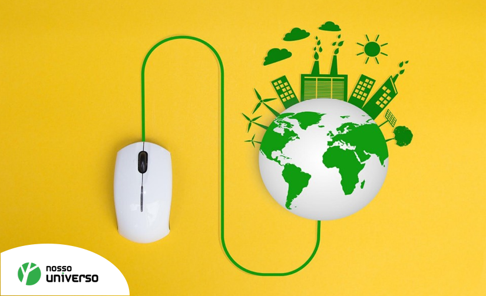
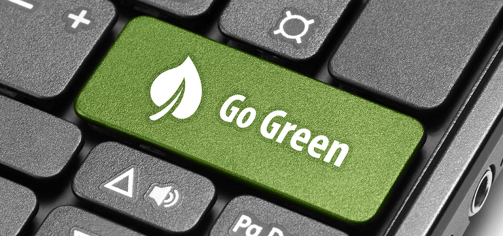

-
TI Verde
Hoje, a necessidade das empresas serem conscientes com o meio ambiente é mais importante do que
nunca. Ao investir em tecnologias de TI verde e implementar políticas ecológicas, você pode
tornar sua empresa uma organização econômica.
-

Afinal, qual é o significado de TI verde?
A TI verde tem como objetivo o estudo e o uso de recursos informáticos de forma eficiente.
Inclui o desenvolvimento de práticas de produção ambientalmente sustentáveis, computadores com
eficiência energética e procedimentos aprimorados de eliminação e reciclagem
-

TI Verde Estratégico
Exige a convocação de uma auditoria sobre a infra-estrutura de TI e seu uso relacionado ao
meio-ambiente, desenvolvendo e implementando novos meios viáveis de produção de bens ou serviços
de forma ecológica. São exemplos, a criação de uma nova infra-estrutura na rede elétrica visando
à sua maior eficiência e sistemas computacionais de menor consumo elétrico (incluindo novas
políticas internas e medidas de controle de seus descartes). Além da preocupação com a retenção
de gastos elétricos, o marketing gerado pelas medidas adotadas pela marca é também levado em
consideração.